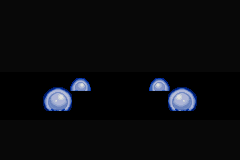
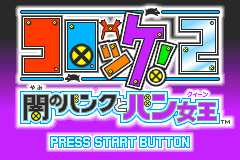

Croket! 2 - Yami no Bank to Banqueen (Japan)
Stateless / Passcode 💾 MultiBoot 🎮 4P Link
Cartridge Identity
- Game Code
BK2J(FamilyBK2)- Header Title
CROKET!2- Maker / Revision
A4/ rev0- ROM Size
- 16.0 MiB (16,777,216 B)
- Save Media
None / Unknown- SHA-256
9c9ca2e524491fce63ff436332d5c5c6f7de8f9bd7d201ff0f14ebe34bbc1788- Engine / SDK Group
comm-001(196 families)
Screenshots


Link Cable & Multiplayer Communications
This title contains detected communication capabilities: 💾 MultiBoot 🎮 4P Link.
Detailed protocol specifications, SIO registers, Joybus commands, and MultiBoot sequences are documented in the Link & Multiplayer Reference.
- Multi-Player SIO (4P)
- 16-bit ring network · SIOCNT (
0x04000128) literals:0x0942fc,0x0c32f8,0x0c335c· SIODATA32/SIOMULTI0 (0x04000120) literals:0x0c33a4,0x0c3730,0x0cd444 - Single-Cart MultiBoot
- Single-Cartridge MultiBoot (Download Play) client/server handler · Thumb SWI 0x25 (
0xDF25):0x0dab8a,0x0daf6c,0x0dd064,0x0e1e24
Cartridge Storage Architecture: Stateless / Passcode
Zero non-volatile battery hardware: This cartridge PCB contains ROM only (no SRAM, Flash, or EEPROM chips). Progression is preserved via on-screen passcodes or session-only gameplay. No
.sav file is generated or required.
ROM Assets, Compression & Audio
- BIOS Compression
- LZ77 (
0x10): 413 streams · RLE (0x30): 31 streams - ROM Pointer Tables
- 221 tables (0 pointing to validated compressed streams)
- SDK Backup Tags
SRAM_F_V103
Asset Map (formatkit.asset-map.v1)
Download BK2J-r0-9c9ca2e524491fce.asset-map.json.gz (183,826 B (179.5 KiB)) Verified PASS · 4.82% coverage
| Metric | Bytes / Value | Entries |
|---|---|---|
| Identified | 321,953 B (314.4 KiB) (1.92%) | 1,777 |
| Mapped | 0 B (0.00%) | 0 |
| Opaque | 486,464 B (475.1 KiB) (2.90%) | 1 |
| Unknown | 15,968,799 B (15.23 MiB) (95.18%) | 1,423 |
| Total ROM Size | 16,777,216 B (16.00 MiB) | 3,201 |
| Coverage % | 4.82% | — |
| Entries w/ Code Refs | 1,884 / 3,201 (58.86%) | — |
Top Identified Formats: gfx.gba-palette (1,770 · 286,560 B (279.8 KiB)) · compress.bios-lz77 (4 · 28,096 B (27.4 KiB)) · audio.m4a-song-table (1 · 5,344 B (5.2 KiB)) · compress.bios-rle (1 · 1,761 B (1.7 KiB)) · gba.rom-header (1 · 192 B)
Largest unknown Extents (Headerless / Custom Asset Candidates)
| Offset | Size | Shannon Entropy | Code Refs |
|---|---|---|---|
0x001C7F88 | 9,739,220 B (9.29 MiB) | 5.242 bits/B | 0 |
0x00B1303C | 4,678,532 B (4.46 MiB) | 7.248 bits/B | 8 |
0x0010C7D1 | 50,563 B (49.4 KiB) | 1.675 bits/B | 0 |
0x000257BC | 46,236 B (45.2 KiB) | 6.257 bits/B | 0 |
0x000452A8 | 46,056 B (45.0 KiB) | 6.478 bits/B | 0 |
gzip -dk BK2J-r0-9c9ca2e524491fce.asset-map.json.gz && gbakit map verify rom.gba BK2J-r0-9c9ca2e524491fce.asset-map.json
gbakit assets export rom.gba --asset-map BK2J-r0-9c9ca2e524491fce.asset-map.json -o out/Text, Fonts & Scene Data
- Primary Text Encoding
- Shift-JIS (uncompressed) (
28ASCII strings ·200Shift-JIS runs) - Font & VWF Indicators
- VWF Width Table 1bpp Font · BIOS SWIs: BitUnPack
0x10:3· LZ770x11/12:4· Huffman0x13:1· RLE0x14/15:7 - Scene & Packaging
115ROM pointer tables (≥32 entries,5≥200) ·51relativeu32TOCs ·463OAM metasprite hits
Password System
- Save Media
- Battery-Backed (SRAM)
- Password Class
- Candidate Static Password Table (
candidate_static_table_no_ui) - Static Table(s)
0xabf0f0
Hardware MMIO Subsystems
ppu_display0x80c52e4,0x80c54a0,0x80c5a40save_bus_sram_flash0x8065208